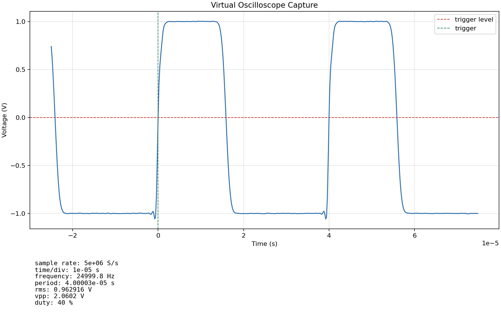

Test-system development
Python automation, instrumentation control, custom interfaces and test hardware, reusable measurements, and engineering reports.
Systems Engineer · Test Automation
I build automated test software and custom hardware used to qualify control boards for advanced semiconductor manufacturing tools. My work spans electrical and analog-performance testing, firmware feature validation, production board acceptance, and coordinated firmware deployment across installed equipment.
Current professional work
I develop and operate the systems that determine whether control boards are ready for installation on advanced semiconductor manufacturing equipment.
I own and continuously expand an automated test system used to validate boards before installation. The suite verifies board configuration and reference voltages, exercises output and waveform-generation functions, and measures gain, transfer response, total harmonic distortion, noise, DC linearity, resonance, thermal behavior, and telemetry. It also validates firmware-controlled operating modes and identifies hardware or firmware problems before deployment.
As new boards and firmware features are developed, I update the system’s software and custom test hardware to add coverage, integrate new measurements, and keep qualification repeatable. I run automated acceptance testing on production boards, prepare validated hardware for installation, and lead coordinated firmware upgrades across board fleets already installed on tools.
Python automation, instrumentation control, custom interfaces and test hardware, reusable measurements, and engineering reports.
Electrical, analog, signal, thermal, telemetry, and firmware-function validation before hardware is released for installation.
Coverage for new boards and firmware features, production acceptance testing, failure diagnosis, and fleet-level firmware upgrades.
Reduced measured settling time to tolerance through data-driven compensation tuning.
Automated calibration and validation across evolving hardware designs.
Tracked firmware and hardware revisions to expose deployment conflicts.
Recovered and validated unresponsive boards before reinstallation.
Selected independent projects
These personal projects explore verification, instrumentation, scientific computing, and storage correctness. They are independent work and are not employer systems.

A reusable Python and cocotb environment for stimulus generation, RTL co-simulation, deterministic reference comparisons, and validation reporting.

A physics-oriented acquisition simulator covering waveform generation, converter impairments, analog response, triggering, measurements, and an interactive browser viewer.
Scientific computing
JPL data ingestion, orbital transfer search, endpoint validation, and an interactive mission viewer.
Open interactive projectSystems software
A Rust key-value engine with fixed pages, redo logging, deletion rebalancing, and SQLite differential tests.
Open case studyBroader experience
My background combines production automation, aerospace hardware, physics, and hands-on electrical system development.
Data Analyst Intern
Built Python and AWS data pipelines for anomaly detection and automated operational reporting.
Aerospace Engineering Intern
Designed, fabricated, wired, and assembled flight hardware in cleanroom satellite programs.
B.A. Physics, May 2026
Coursework in electromagnetism, optics, advanced electrical laboratory, quantum mechanics, and thermal physics.
Contact
I’m interested in systems, semiconductor test, instrumentation, manufacturing-test, and hardware-validation engineering work.